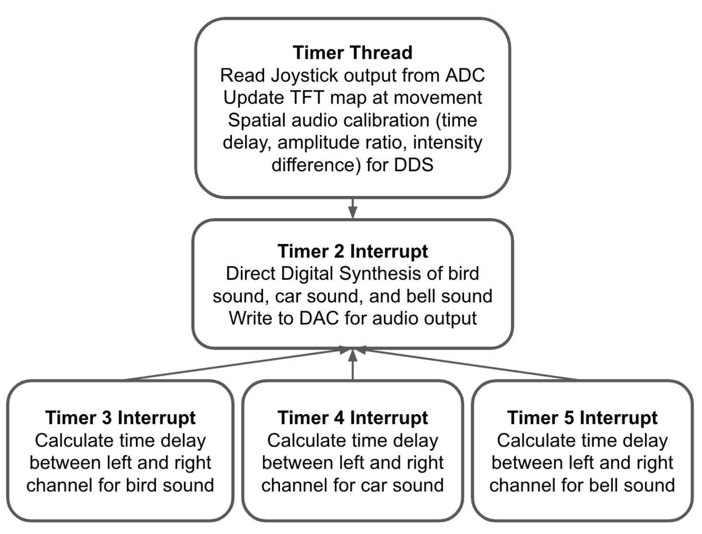
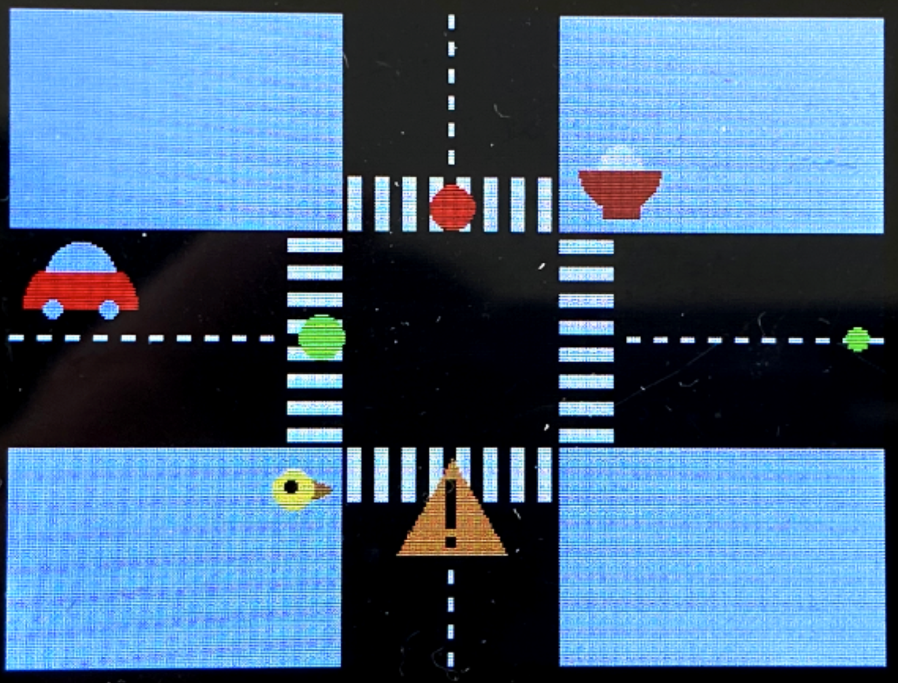

Software Design
Software Block Diagram
In our final project, we designed the software system based on user interaction. The Timer Thread is responsible for reading user input every 500ms. It firstly checks the potentiometer output value on the joystick to detect movements. When the user moves the joystick, the audio output stops and the green dot representing the user on the TFT map moves according to user input. When the user moves the dot to his/her destination, he/she clicks the button on the joystick to start the spatial audio output. Once a button click is detected, the Timer Thread calculates the time delay, amplitude ratio, and intensity difference between the left and right channel for the three sound sources independently. These changes will be written into global variables which will be picked up by the Timer 2, 3, 4, and 5 Interrupt. Timer 2 Interrupt handles the direct digital synthesis and DAC audio output for the three sound sources. The left and right channel of each sound is calculated independently and summed together to generate the final audio. Because of the spatial audio feature, there will be delay between the left and right channel. Timer 3, 4, and 5 Interrupts are used to signal the start of the delayed channel for the bird, car, and bell sound.
Timer Thread (Joystick Control and Spatio Audio)
The Timer thread is called every 500 milliseconds. This yield time ensures that joystick movement is smooth from a user perspective but also gives enough time to the thread to finish the calculation. The first task the Timer Thread handles is to read in the two analog values from the x/y position potentiometers on the joystick. If there is a movement indicated by the joystick values, we update the map to show the new “human” position and close timer 2, which is responsible for DDS output. The same process is repeated until the user moves the dot to the destination position and clicks the joystick button. The reason behind is that performing spatial audio calculation repeatedly will delay the thread response and has a chance to cause a reset on the PIC32.
When the button click is detected, the Timer Thread calculates the parameters related to the spatial audio. Based on the hardcoded sound source positions and the updated “human” position, we are able to determine which ear/channel is further from the sound source, calculate the amplitude ratio and time delay between left and right channel and the intensity difference between the current “human” position and the sound source following the algorithms mentioned above. The intensity difference is represented by the max amplitude of the left or right channel audio depending on which one is louder and the amplitude ratio is represented by the max amplitude ratio between the further channel and the closer channel. These two values are used to generate the sound amplitude envelope, which will be used in the Timer 2 Interrupt for direct digital synthesis calculation.
The time delay between the two channels is slightly more complicated. To implement the delay, we used timer interrupts to delay the audio starting time of the further channel. This is done by calculating the real time delay between the left and right ears, converting it to cycle count within the 40MHz PIC32, and setting the interrupt timer to the corresponding value. Every time we finish the audio calibration process in the Timer Thread, a separate timer is started for the delayed audio channel of each sound source when the other channel starts to output the audio signal. Once the timer finishes counting down, an interrupt service routine is triggered to start audio on the delayed channel. To make sure that we can start the audio on time, we set the DDS Timer 2 ISR to priority 2 and the sound localization ISRs to priority 1 so that the DDS calculation will not interrupt the audio calibration. Although this is a simple version of the spatial audio only involving intensity and time difference, it can already create the illusion of a sound moving from one side to the other.
Timer 2 ISR (Synthesized Audio)
Timer 2 is used for direct digital synthesis and is opened whenever the button is pressed on the joystick indicating that the spatial audio calibration is recalculated (such as when the “human” has moved on the screen). It is triggered at a constant rate of 15kHz which is our digital synthesis sample rate. Even though digital synthesize sound at this sampling rate will be less realistic as the ones at 44kHz, this is the highest resolution we can achieve when performing DDS on three sound sources at the same time.
In the Timer 2 ISR, we first clear the interrupt flag and compute the frequency functions for each of the three sounds. As stated above, for the bird we approximate a chirp sound with a quadratic function, for the car we use a linear piecewise function to represent a sawtooth waveform, and for the bell we implement two frequencies to represent a two-toned chime. For each synthesized audio we call on the DDS algorithm to index into a pre-generated sine table to account for the phase and this sine table entry value is then written into the DAC output. Since frequency has to be positive to produce sound, we leveled the DDS output to make sure it stays at the upper half of the DAC range (0-4096). It is important to note that we compute the frequency functions for each side (left and right) separately as the audio for each ear is different due to spatial audio.
In order to make our synthesized sounds more realistic and also to avoid non-natural clicks, we then layer a different amplitude envelope over each of our sounds as shown in our Synthesized Audio section. We first define an attack time, sustain time, and decay time for each of the three sounds. We then use linear ramp functions to ramp up, ramp down, or sustain the amplitude for a certain number of samples. Like with the frequency functions, we do this for each ear separately. This is also how we implement the intensity difference and the amplitude ratio features of the sound localization. Knowing the max DDS amplitude for each channel, we pre-calculate the ramping up/down speed in the calibration stage in the Timer Thread and the increment/decrement rate is used here to tune the amplitude.
Lastly, we write these outputs over SPI to DACA and DACB, looping through these sounds until the “human” is moved, which then causes sound to stop being produced until the button on the joystick is pressed again.
Timers 3,4,5 ISRs
As sound localization requires delay between two ears to create a sense of direction, we used timers and interrupts to create the delay between DAC channels. In particular, Timer 3 corresponds to the bird sound, Timer 4 corresponds to the car, and Timer 5 is for the Oishi Bowl chime. We determine the further channel and the delay length for each sound source, which will be written into global volatile variables and utilized by the ISRs. After the calculation finishes, timers are started for the delayed audio channels when the closer channels start outputting audio signals. Once a timer finishes counting down, its corresponding interrupt service routine will be triggered. The ISR first reads the flag indicating whether the left or right channel is further from the sound source. For the selected channel, we apply the amplitude ratio to the max amplitude which is calculated from the ILD equation and reset the audio output counter of the respective channel to 0 to start the DDS in the Timer2 Interrupt. This process is only done once when the audio output starts. As each channel resets its DDS counter independently, the effect of spatial audio remains when the sounds get looped through in each channel.
TFT Map
To visually present a simplified view of Collegetown showing key elements and sound sources in our intersection, we implemented a graphical user interface on the 320x240 color LCD TFT display. Due to the low resolution of the display, we decided to use a minimalist, flat-design with colorful graphics. Our design consisted of an intersection containing a crosswalk and a road with a dashed centerline, as well as traffic lights, a construction sign, an icon for Oishii bowl (consisting of a red bowl with rice), a red car, and a yellow bird.

We implemented our map with the tft_gfx library which gave us functions that can draw text and simple geometric shapes such as circles, rectangles, triangles, and lines. To make artistic icons, we strategically overlaid them. For example, the sign for the construction site is two rectangles overlayed on a yellow triangle, the bird is a brown triangle on the side of a big yellow circle with a small black circle for the eye. For the Oishii bowl icon, we first drew a big red circle, then covered half of it with a grey rectangle, and then drew a smaller white circle (as the rice), and then covered the second half of that circle with red. For the map, we used two big black rectangles as the road and decorated them with dashed lines for the median strip and long skinny white rectangles for the crosswalk. To pick custom colors for our icons, we used an online 16-bit color generator to find the hexadecimal 16-bit color value.
In terms of implementation, we have a function for drawing and initializing the entire map at the beginning of the program. We then have a function for updating the map whenever the “human” moves in order to avoid leaving traces on the road. For example, we redraw the crosswalk and the road centerline as well as the green traffic light.
Main Function
In our main function, we set up our pins as well as the SPI interface. Additionally, we build the sine lookup table we need for direct digital synthesis, initialize the TFT and collegetown map, set up the ADC for the joystick, as well as set up system-wide interrupts, protothreads, and our thread scheduling.